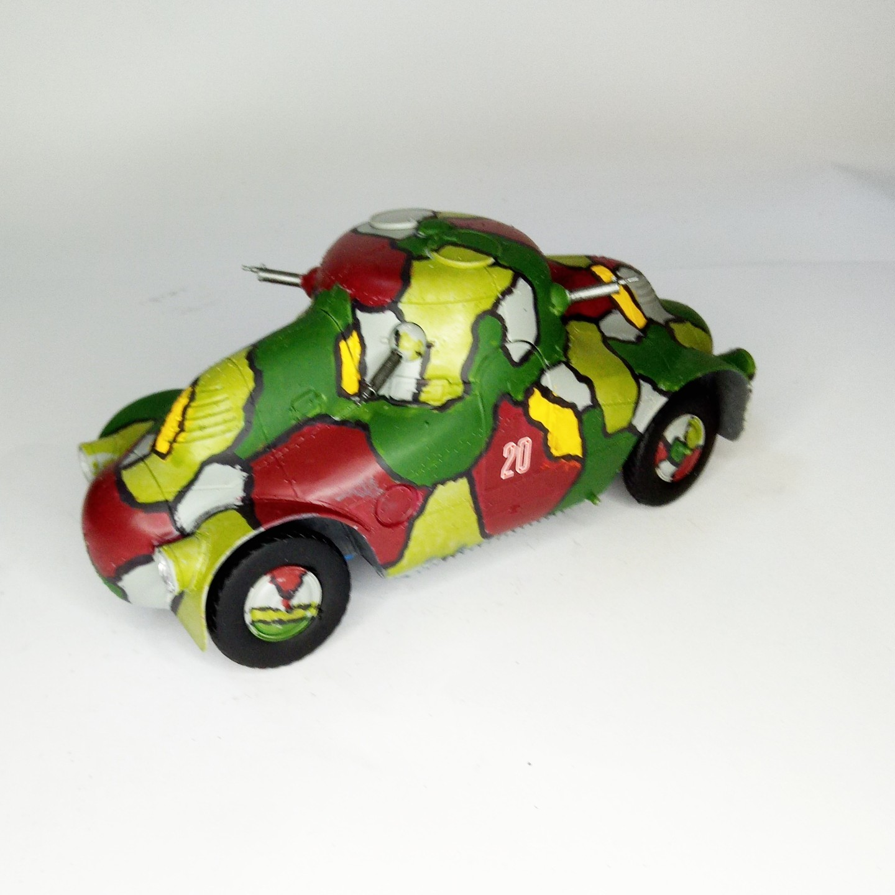

Mezzi militari · scale model archive
Skoda PA II 'Turtle'
Skoda PA II 'Turtle' — Kit: Takom, Scale: 1/35. Crazy Czech camouflage #1/35 #Takom

Photo gallery
English description
Crazy Czech camouflage
#1/35 #Takom
Descrizione italiana
Crazy ceco mimetica.